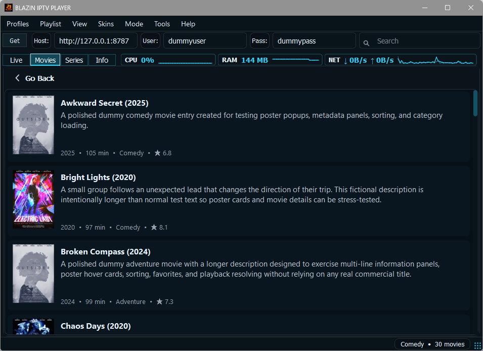
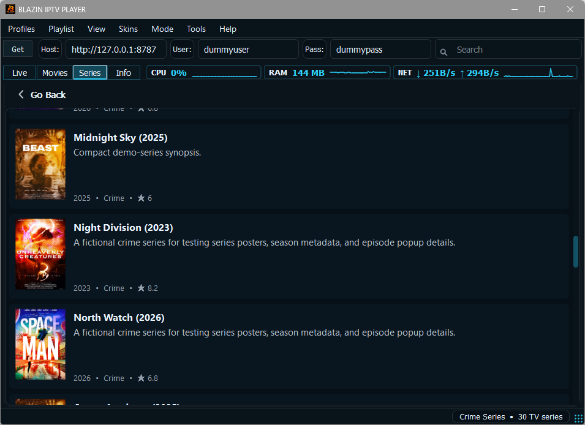
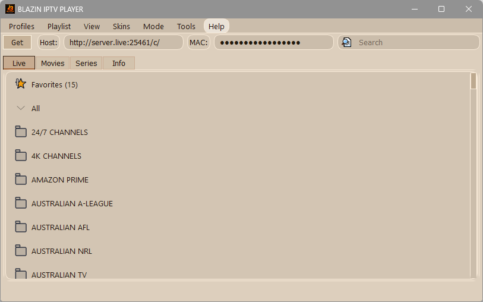
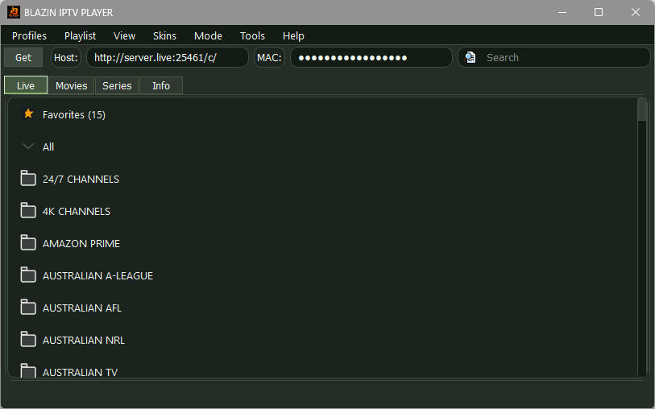
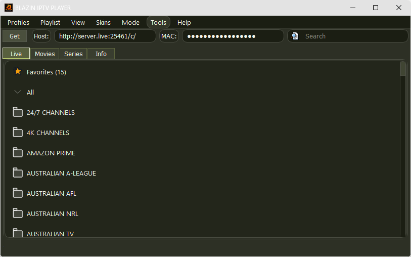

BLAZIN IPTV Player Screenshots for Windows
Preview the Windows IPTV player interface, playback screens, profile setup screens, and several of the 33 built-in themes before starting the 7-day free trial.


Live TV playlist
Windows IPTV player live TV playlist with search and categories. Screenshots show player software only; content and playlists are user-provided.

EPG guide
IPTV player with EPG guide data on Windows. Screenshots show player software only; content and playlists are user-provided.

Xtream Codes setup
Xtream Codes IPTV player profile setup on Windows. Screenshots show player software only; content and playlists are user-provided.

STB MAC and Stalker setup
STB MAC and Stalker Portal IPTV profile setup on Windows. Screenshots show player software only; content and playlists are user-provided.

Movies tab
Windows IPTV player movies tab for user-provided VOD sources. Screenshots show player software only; content and playlists are user-provided.

Series tab
Windows IPTV player series tab and episode browsing. Screenshots show player software only; content and playlists are user-provided.

Internal player
Internal VLC based IPTV playback on Windows. Screenshots show player software only; content and playlists are user-provided.

Blue theme example
One of 33 built-in themes and skins available in BLAZIN IPTV Player for Windows.

Brown theme example
Brown desktop color preset for users who prefer a warmer interface style.

Green theme example
Green theme option for the Windows IPTV player interface.

Dark green theme example
Dark green theme option for users who prefer a deeper desktop color scheme.
33 themes and skins
BLAZIN IPTV Player includes 33 built-in themes and skins. These screenshots show several examples, not the full theme list.
Related Windows IPTV Guides
Continue Comparing Setup Options
Windows IPTV Player
Review this related BLAZIN guide for source setup, Windows workflow details, legal notes, and trial testing.
Best IPTV Player for Windows 11
Review this related BLAZIN guide for source setup, Windows workflow details, legal notes, and trial testing.
M3U Player for Windows
Review this related BLAZIN guide for source setup, Windows workflow details, legal notes, and trial testing.
M3U Plus Player
Review this related BLAZIN guide for source setup, Windows workflow details, legal notes, and trial testing.
Xtream Codes Player
Review this related BLAZIN guide for source setup, Windows workflow details, legal notes, and trial testing.
STB MAC Player
Review this related BLAZIN guide for source setup, Windows workflow details, legal notes, and trial testing.
Stalker Portal Player
Review this related BLAZIN guide for source setup, Windows workflow details, legal notes, and trial testing.
IPTV Player with EPG
Review this related BLAZIN guide for source setup, Windows workflow details, legal notes, and trial testing.
IPTV Player Zero Alternative
Review this related BLAZIN guide for source setup, Windows workflow details, legal notes, and trial testing.
IPTV Smarters Alternative
Review this related BLAZIN guide for source setup, Windows workflow details, legal notes, and trial testing.
TiviMate Alternative
Review this related BLAZIN guide for source setup, Windows workflow details, legal notes, and trial testing.
VLC IPTV Player
Review this related BLAZIN guide for source setup, Windows workflow details, legal notes, and trial testing.
7-Day Free Trial
Try the Interface Free for 7 Days
Install from the Microsoft Store, add your own legal playlist or portal details, and test the Windows IPTV workflow before deciding whether it fits your setup.
BLAZIN IPTV Player is player-only software. It does not provide channels, playlists, streams, provider accounts, or copyrighted content.